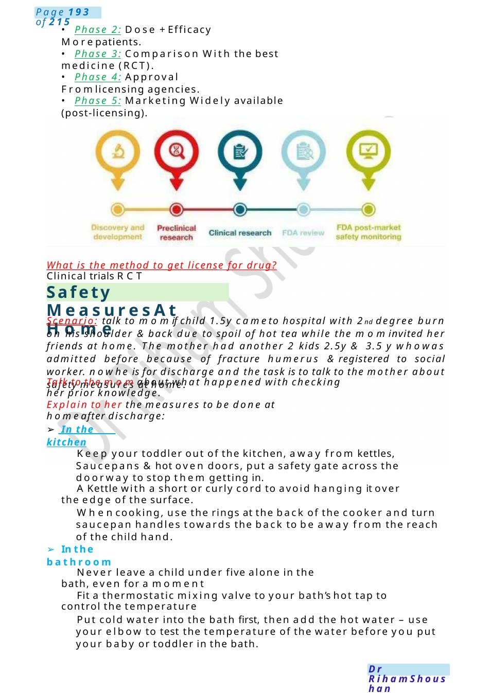
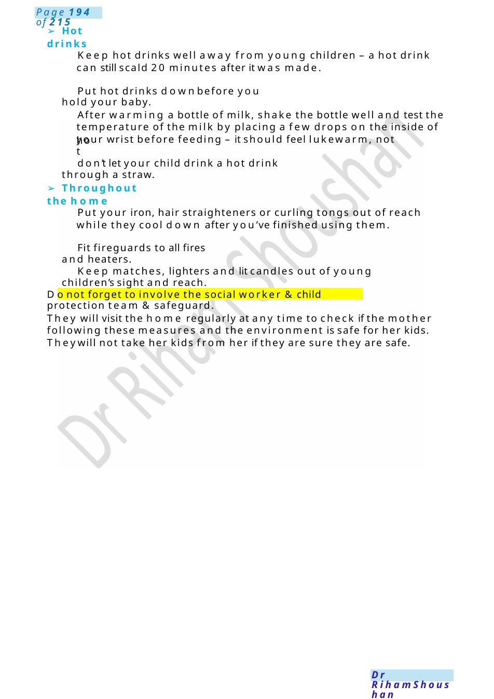

Safety Measures At Home
• Phase 5: Marketing Widely available (post-licensing). What is the method to get license for drug? Clinical trials RCT
Scenario Summary
• Phase 5: Marketing Widely available (post-licensing). What is the method to get license for drug? Clinical trials RCT
Full Original Scenario

Safety Measures At Home
- Phase 2: Dose +Efficacy Morepatients.
- Phase 3: Comparison With the best medicine (RCT).
- Phase 4: Approval Fromlicensing agencies.
- Phase 5: Marketing Widely available (post-licensing).
What is the method to get license for drug? Clinical trials RCT
Scenario: talk to momif child 1.5y cameto hospital with 2nd degree burn on his shoulder &back due to spoil of hot tea while the mominvited her friends at home. The mother had another 2 kids 2.5y & 3.5 y whowas admitted before because of fracture humerus ®istered to social worker. nowhe is for discharge and the task is to talk to the mother about safety measures at home.
Talk to the momabout what happened with checking her prior knowledge.
Explain to her the measures to be done at homeafter discharge:
- In the kitchen
Keep your toddler out of the kitchen, away from kettles, Saucepans &hot oven doors, put a safety gate across the doorway to stop them getting in.
AKettle with a short or curly cord to avoid hanging it over the edge of the surface.
Whencooking, use the rings at the back of the cooker and turn saucepan handles towards the back to be away from the reach of the child hand.
- In the bathroom
Never leave a child under five alone in the bath, even for a moment
Fit a thermostatic mixing valve to your bath’s hot tap to control the temperature
Put cold water into the bath first, then add the hot water – use your elbow to test the temperature of the water before you put your baby or toddler in the bath.

- Hot drinks
Keep hot drinks well away from young children – a hot drink can still scald 20 minutes after it was made.
Put hot drinks downbefore you hold your baby.
After warming a bottle of milk, shake the bottle well and test the temperature of the milk by placing a few drops on the inside of your wrist before feeding – it should feel lukewarm, not
hot
don’t let your child drink a hot drink through a straw.
- Throughout the home
Put your iron, hair straighteners or curling tongs out of reach while they cool down after you’ve finished using them.
Fit fireguards to all fires and heaters.
Keep matches, lighters and lit candles out of young children’s sight and reach.
Donot forget to involve the social worker &child protection team &safeguard.
They will visit the home regularly at any time to check if the mother following these measures and the environment is safe for her kids. Theywill not take her kids from her if they are sure they are safe.

Appendicitis
MRCPCHCommunication Scenario: Topic: Discussing a Disagreement with Surgical Registrar (Possible Appendicitis)
⚕️Candidate Instructions: Youare a paediatric doctor in the emergency department.
A5-year-old girl, Anita, presents with:
- Severe abdominal pain (pain score 8/10)
- Drawing legs up due to pain
- Fever: 39.5°C
- Anorexia
- WBC:30,000 with left shift
Thesurgical registrar (Dr Kres) has reviewed her and believes this is UTI, not appendicitis, and is not planning further surgical involvement.
Your task:
- Speak to Dr Kres
- Express your concerns professionally